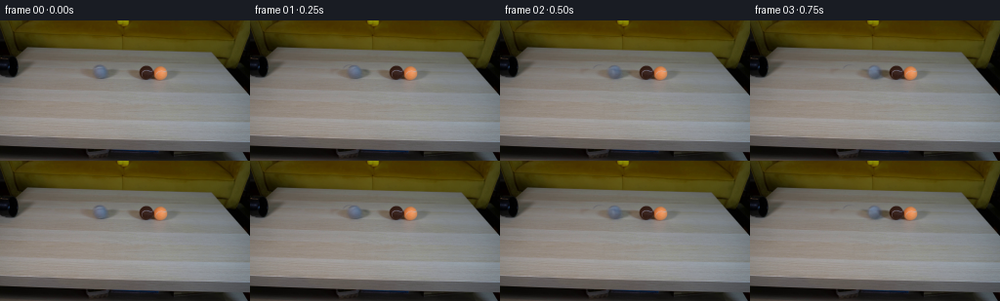
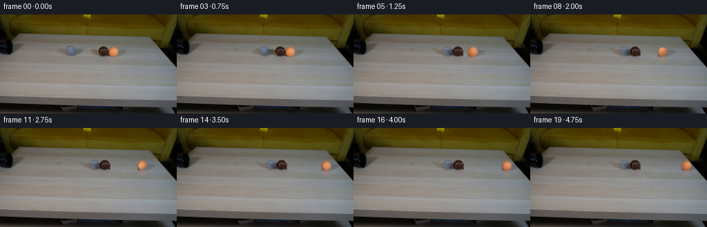

CODING AGENTS AS PIXEL WORLD MODELS
traex/GPT-6.1-Sol · 0029
点击播放 · 原生 RGB 像素
逐轮保存的候选
回放视频、检查图与代码变化。
每份候选均可单独播放。实际图片检查记录在下方工具轨迹中。
候选 01播放与检查图
点击播放 · 原生 RGB 像素

展开代码变化
--- 上一保存版本
+++ 本次保存版本
@@ -0,0 +1,166 @@
+from pathlib import Path
+import numpy as np
+from PIL import Image
+import cv2
+from scipy.ndimage import gaussian_filter, map_coordinates
+import artifact_io
+
+ROOT = Path(__file__).resolve().parent
+
+def smoothstep(a, b, v):
+ q = np.clip((v-a)/(b-a), 0, 1)
+ return q*q*(3-2*q)
+
+
+def make_scene():
+ original = np.asarray(Image.open(ROOT/'first_frame.png').convert('RGB'), dtype=np.float32)
+ yy,xx=np.mgrid[:144,:256].astype(np.float32)
+ # Soft masks include the very small soft table shadows and reflections.
+ def ellipse(cx,cy,rx,ry,inner=.73,outer=1.0):
+ d=np.sqrt(((xx-cx)/rx)**2+((yy-cy)/ry)**2)
+ return 1-smoothstep(inner,outer,d)
+ g_obj=ellipse(102.6,52.7,8.7,8.3,.85,1)
+ g_shadow=ellipse(102,54.1,22,6.5,.68,1)
+ g_contact=ellipse(103,60,12,3.8,.6,1)
+ maskg=np.maximum.reduce([g_obj,g_shadow,g_contact])
+ b_obj=ellipse(150.2,53.6,8.8,8.7,.85,1)
+ b_shadow=ellipse(147,55,19,6.8,.65,1)
+ b_contact=ellipse(150,60.2,13,5.1,.55,1)
+ o_obj=ellipse(164.8,53.7,9,8.6,.87,1)
+ o_shadow=ellipse(173,55.4,15,6,.55,1)
+ o_ref=ellipse(164.5,63.5,18,7.2,.5,1)
+ maskbo=np.maximum.reduce([b_obj,b_shadow,b_contact,o_obj,o_shadow,o_ref])
+ mask=np.maximum(maskg,maskbo)
+ # Reconstruct the local table surface, row by row. The remaining real table
+ # supplies its illumination gradient, fine texture, and grain direction.
+ surface=original.copy()
+ rng=np.random.default_rng(29)
+ noise=rng.normal(0,.62,(144,256,1)).astype(np.float32)
+ noise=.7*noise+.3*gaussian_filter(noise,(.6,.6,0))
+ for y in range(42,72):
+ # Undisturbed sample windows to either side of the three balls.
+ xa=np.array([76.,125.5,191.5],np.float32)
+ vals=np.array([original[y,73:80].mean(0), original[y,123:129].mean(0), original[y,187:197].mean(0)])
+ # The middle interval is clear; the mild background gradient is
+ # preserved using piecewise linear rather than extrapolated polynomials.
+ row=np.empty((256,3),np.float32)
+ for c in range(3):
+ row[:,c]=np.interp(np.arange(256),xa,vals[:,c])
+ row+=noise[y]
+ surface[y]=row
+ base=original*(1-mask[...,None])+surface*mask[...,None]
+ residual=original-base
+ # Split photographs into moving object layers. All values are differences
+ # from the clean table, so native blur and native soft penumbras are retained.
+ layerg=residual*(xx<126)[...,None]
+ bshare=1-smoothstep(156.6,157.8,xx)
+ layerb=residual*(xx>=126)[...,None]*bshare[...,None]
+ layero=residual*(xx>=126)[...,None]*(1-bshare[...,None])
+ return original,base,[layerg,layerb,layero]
+
+
+def trajectory():
+ # Equal-mass rolling spheres with an inelastic sequential collision.
+ # Coordinates are image-plane table coordinates, hence no camera movement.
+ x=np.array([102.6,150.2,164.8],float)
+ v=np.array([0.,0.,0.])
+ r=np.array([7.1,7.3,7.3])
+ result=[x.copy()]
+ dt=1/1600
+ started=False
+ for k in range(1,20):
+ for j in range(400):
+ t=(k-1)*.25+(j+1)*dt
+ if t>=.15 and not started:
+ v[0]=42.;started=True
+ drag=np.array([3.0 if x[0]<135.8 else 7.,7.,7.])
+ v=np.maximum(0,v-drag*dt)
+ x+=v*dt
+ for a,b in [(0,1),(1,2)]:
+ spacing=r[a]+r[b]
+ if x[b]-x[a]<spacing:
+ correction=(spacing-(x[b]-x[a]))*.5
+ x[a]-=correction;x[b]+=correction
+ if v[a]>v[b]:
+ relative=v[a]-v[b]
+ impulse=.5*(1+.73)*relative
+ v[a]-=impulse;v[b]+=impulse
+ result.append(x.copy())
+ return np.array(result)
+
+
+def shading(nx,ny,nz):
+ # Broad, dim room illumination, stable in the locked-off scene.
+ lam=np.maximum(0,-.37*nx-.56*ny+.74*nz)
+ return .66+.34*lam
+
+
+def rolling_layer(layer,orig,base,cx,cy,rx,ry,distance):
+ """Rotate the photographic surface on a sphere, leaving its shadow separate."""
+ if abs(distance)<.001:
+ return layer
+ y,x=np.mgrid[:144,:256].astype(np.float32)
+ nx=(x-cx)/rx;ny=(y-cy)/ry
+ d2=nx*nx+ny*ny
+ disk=d2<.96**2
+ z=np.sqrt(np.maximum(0,1-d2))
+ theta=distance/(rx*1.18)
+ # Camera's shallow elevation projects the table-depth rolling axis into yz.
+ axis=np.array([0.,-.46,.888],np.float32)
+ axis/=np.linalg.norm(axis)
+ cs=np.cos(theta);sn=np.sin(theta)
+ dot=ny*axis[1]+z*axis[2]
+ ux=nx*cs+(axis[1]*z-axis[2]*ny)*sn
+ uy=ny*cs+axis[2]*nx*sn+axis[1]*dot*(1-cs)
+ uz=z*cs-axis[1]*nx*sn+axis[2]*dot*(1-cs)
+ # The unseen hemisphere continues the first-frame felt texture by symmetry.
+ # Pull sampling slightly inside the sphere to avoid background at its rim.
+ rim=np.sqrt(ux*ux+uy*uy)
+ shrink=np.minimum(1,.90/np.maximum(rim,1e-5))
+ ux*=shrink;uy*=shrink
+ source_x=cx+rx*ux;source_y=cy+ry*uy
+ coordinates=np.array([source_y,source_x])
+ source=np.stack([map_coordinates(orig[:,:,c],coordinates,order=1,mode='nearest') for c in range(3)],-1)
+ ss=shading(ux,uy,np.sqrt(np.maximum(0,1-ux*ux-uy*uy)))
+ target=source/ss[...,None]*shading(nx,ny,z)[...,None]
+ # Mix fine native texture rotation with the native broad tone/shading. This
+ # keeps the starting photographic identity and prevents artificial relighting.
+ amount=.62*smoothstep(.8,3.4,abs(distance))
+ feather=(1-smoothstep(.78,.965,np.sqrt(d2)))*amount
+ out=layer.copy()
+ out+=(target-orig)*feather[...,None]
+ return out
+
+
+def main():
+ orig,base,layers=make_scene()
+ motion=trajectory()
+ origins=np.array([102.6,150.2,164.8])
+ centers=[(102.6,52.7,7.1,7.15),(150.2,53.6,7.15,7.15),(164.8,53.7,7.4,7.35)]
+ frames=[orig.astype(np.uint8)]
+ for i in range(1,20):
+ image=base.copy()
+ # Exposure averaging only affects the rolling objects, never the set.
+ for j,layer in enumerate(layers):
+ dx=float(motion[i,j]-origins[j])
+ moving=rolling_layer(layer,orig,base,*centers[j],dx)
+ # A near-horizontal trajectory on this part of the table. All balls
+ # remain grounded and transfer momentum along the pipe's line.
+ dy=dx*.015
+ # Small shutter blur (1/65 s), in a native-resolution reconstruction.
+ velocity=(motion[i,j]-motion[i-1,j])*4
+ blur=velocity/65
+ warped=0
+ for offset,w in [(-.5,.25),(0,.5),(.5,.25)]:
+ mat=np.float32([[1,0,dx+offset*blur],[0,1,dy]])
+ warped=warped+w*cv2.warpAffine(moving,mat,(256,144),flags=cv2.INTER_LINEAR,borderMode=cv2.BORDER_CONSTANT)
+ image+=warped
+ frames.append(np.clip(np.rint(image),0,255).astype(np.uint8))
+ frames=np.stack(frames)
+ assert np.array_equal(frames[0],np.array(Image.open(ROOT/'first_frame.png').convert('RGB')))
+ np.save(ROOT/'.tmp'/'positions.npy',motion)
+ Image.fromarray(np.clip(np.rint(base),0,255).astype(np.uint8)).save(ROOT/'.tmp'/'table_clean.png')
+ artifact_io.save(frames,ROOT)
+
+if __name__=='__main__':
+ main()
候选 02播放与检查图
点击播放 · 原生 RGB 像素

展开代码变化
--- 上一保存版本
+++ 本次保存版本
@@ -154,6 +154,13 @@
for offset,w in [(-.5,.25),(0,.5),(.5,.25)]:
mat=np.float32([[1,0,dx+offset*blur],[0,1,dy]])
warped=warped+w*cv2.warpAffine(moving,mat,(256,144),flags=cv2.INTER_LINEAR,borderMode=cv2.BORDER_CONSTANT)
+ # A sphere occludes the other spheres' table-level penumbras.
+ # This prevents additive dark halos during contact; the moving
+ # photograph retains its own illumination and its own native rim.
+ yy,xx=np.mgrid[:144,:256].astype(np.float32)
+ cx,cy,rx,ry=centers[j]
+ coverage=1-smoothstep(.77,1.02,np.sqrt(((xx-cx-dx)/rx)**2+((yy-cy-dy)/ry)**2))
+ image=base+(image-base)*(1-coverage[...,None])
image+=warped
frames.append(np.clip(np.rint(image),0,255).astype(np.uint8))
frames=np.stack(frames)
可观测工具轨迹
实际执行的命令与返回图片。
命令 1exit 0
/bin/bash -lc 'ls -la && cat prompt.txt && cat GENERATION_RULES.md'
命令 2exit 0
/bin/bash -lc "cat artifact_io.py && python - <<'PY'
from PIL import Image
import numpy as np
im=np.array(Image.open('first_frame.png').convert('RGB'))
print('shape',im.shape)
for y in range(0,144,6):
print(y, ' '.join('%02x%02x%02x'%tuple(im[y,x]) for x in range(0,256,8)))
PY"命令 3exit 0
/bin/bash -lc "python - <<'PY'
import numpy as np
from PIL import Image
A=np.array(Image.open('first_frame.png').convert('RGB')).astype(float)
# color class maps
for ya,yb,xa,xb in [(25,68,0,190),(38,66,78,178)]:
print('REGION',xa,xb,ya,yb)
print(''.join(str(x//10%10) for x in range(xa,xb)))
print(''.join(str(x%10) for x in range(xa,xb)))
for y in range(ya,yb):
s=''
for x in range(xa,xb):
r,g,b=A[y,x];mean=(r+g+b)/3
if mean<20:c='#'
elif mean<40:c='X'
elif r>g*1.3 and r>b*1.5:c='O' if r>120 else 'b'
elif b>r*1.08 and b>g*1.04:c='B' if b>90 else 'u'
elif r>g*1.1 and b<g*.75:c='v'
elif max(r,g,b)-min(r,g,b)<15:c='.' if mean>115 else (':' if mean>80 else '+')
else:c='-'
s+=c
print(f'{y:3}',s)
PY"命令 4exit 0
/bin/bash -lc "python - <<'PY'
from PIL import Image
import numpy as np
A=np.array(Image.open('first_frame.png'))
for y in range(42,62):
print(y,' '.join('%02x%02x%02x'%tuple(A[y,x]) for x in range(88,117)))
print('\\nGray full top')
c='@%#*+=-:. '
for y in range(0,72):
print(f'{y:2d} '+''.join(c[min(9,int(A[y,x,:3].mean())*10//180)] for x in range(0,180)))
PY"命令 5exit 0
/bin/bash -lc "python - <<'PY'
from PIL import Image
import numpy as np
im=np.array(Image.open('first_frame.png')).astype(float)
for y in range(44,69,2):
print(y,[(x,tuple(im[y,x].astype(int))) for x in range(24,202,4)])
PY"命令 6exit 0
/bin/bash -lc "python - <<'PY'
import numpy as np
from PIL import Image
A=np.array(Image.open('first_frame.png')).astype(float)
c='@%#*+=-:. '
for x0,x1,y0,y1 in [(90,117,42,64),(135,176,42,66)]:
print('\\n',x0,x1)
print(' '+''.join(str(x%10)*2 for x in range(x0,x1)))
for y in range(y0,y1):
print(f'{y:3d} '+''.join(c[min(9,int(A[y,x].mean())*10//256)]*2 for x in range(x0,x1)))
# brown rgb
for y in range(45,63):
print(y,' '.join('%02x%02x%02x'%tuple(A[y,x].astype(int)) for x in range(139,159)))
PY"命令 7exit 0
/bin/bash -lc "python - <<'PY' import importlib.util for x in ['cv2','scipy','PIL','numpy']: print(x, bool(importlib.util.find_spec(x))) PY"
命令 8exit 0
/bin/bash -lc "python - <<'PY'
from PIL import Image
import numpy as np
A=np.array(Image.open('first_frame.png')).astype(int)
for y in range(42,72):
print(y,' '.join('%3d'%A[y,x].mean() for x in range(75,200,3)))
PY"命令 9exit 0
/bin/bash -lc "mkdir -p .tmp && cat > .tmp/probe.py <<'PY'
from PIL import Image
import numpy as np
A=np.array(Image.open('first_frame.png')).astype(float)
# tabulate local horizontal surface under all objects
for y in range(43,68):
print(y,[(x, tuple(np.mean(A[y,x-1:x+2],axis=0).astype(int))) for x in [78,82,118,121,125,128,131,185,188,192,196]])
PY
python .tmp/probe.py"命令 10exit 0
/bin/bash -lc "python - <<'PY'
from PIL import Image
import numpy as np
A=np.array(Image.open('first_frame.png')).astype(float)
for name,(x0,x1,y0,y1) in {'grey':(91,115,42,64),'brown':(138,160,43,65),'orange':(154,174,43,65)}.items():
print(name)
for y in range(y0,y1):
s=''
for x in range(x0,x1):
r,g,b=A[y,x]
if name=='grey':v=b-r
elif name=='brown':v=120-(r+g+b)/3
else:v=r-g
s+=' ' if v<5 else ('..' if v<10 else ('::' if v<20 else ('oo' if v<40 else('OO' if v<60 else '##'))))
print('%2d'%y+s)
PY"命令 11exit 0
/bin/bash -lc "cat > generate.py <<'PY'
from pathlib import Path
import numpy as np
from PIL import Image
import cv2
from scipy.ndimage import gaussian_filter, map_coordinates
import artifact_io
ROOT = Path(__file__).resolve().parent
def smoothstep(a, b, v):
q = np.clip((v-a)/(b-a), 0, 1)
return q*q*(3-2*q)
def make_scene():
original = np.asarray(Image.open(ROOT/'first_frame.png').convert('RGB'), dtype=np.float32)
yy,xx=np.mgrid[:144,:256].astype(np.float32)
# Soft masks include the very small soft table shadows and reflections.
def ellipse(cx,cy,rx,ry,inner=.73,outer=1.0):
d=np.sqrt(((xx-cx)/rx)**2+((yy-cy)/ry)**2)
return 1-smoothstep(inner,outer,d)
g_obj=ellipse(102.6,52.7,8.7,8.3,.85,1)
g_shadow=ellipse(102,54.1,22,6.5,.68,1)
g_contact=ellipse(103,60,12,3.8,.6,1)
maskg=np.maximum.reduce([g_obj,g_shadow,g_contact])
b_obj=ellipse(150.2,53.6,8.8,8.7,.85,1)
b_shadow=ellipse(147,55,19,6.8,.65,1)
b_contact=ellipse(150,60.2,13,5.1,.55,1)
o_obj=ellipse(164.8,53.7,9,8.6,.87,1)
o_shadow=ellipse(173,55.4,15,6,.55,1)
o_ref=ellipse(164.5,63.5,18,7.2,.5,1)
maskbo=np.maximum.reduce([b_obj,b_shadow,b_contact,o_obj,o_shadow,o_ref])
mask=np.maximum(maskg,maskbo)
# Reconstruct the local table surface, row by row. The remaining real table
# supplies its illumination gradient, fine texture, and grain direction.
surface=original.copy()
rng=np.random.default_rng(29)
noise=rng.normal(0,.62,(144,256,1)).astype(np.float32)
noise=.7*noise+.3*gaussian_filter(noise,(.6,.6,0))
for y in range(42,72):
# Undisturbed sample windows to either side of the three balls.
xa=np.array([76.,125.5,191.5],np.float32)
vals=np.array([original[y,73:80].mean(0), original[y,123:129].mean(0), original[y,187:197].mean(0)])
# The middle interval is clear; the mild background gradient is
# preserved using piecewise linear rather than extrapolated polynomials.
row=np.empty((256,3),np.float32)
for c in range(3):
row[:,c]=np.interp(np.arange(256),xa,vals[:,c])
row+=noise[y]
surface[y]=row
base=original*(1-mask[...,None])+surface*mask[...,None]
residual=original-base
# Split photographs into moving object layers. All values are differences
# from the clean table, so native blur and native soft penumbras are retained.
layerg=residual*(xx<126)[...,None]
bshare=1-smoothstep(156.6,157.8,xx)
layerb=residual*(xx>=126)[...,None]*bshare[...,None]
layero=residual*(xx>=126)[...,None]*(1-bshare[...,None])
return original,base,[layerg,layerb,layero]
def trajectory():
# Equal-mass rolling spheres with an inelastic sequential collision.
# Coordinates are image-plane table coordinates, hence no camera movement.
x=np.array([102.6,150.2,164.8],float)
v=np.array([0.,0.,0.])
r=np.array([7.1,7.3,7.3])
result=[x.copy()]
dt=1/1600
started=False
for k in range(1,20):
for j in range(400):
t=(k-1)*.25+(j+1)*dt
if t>=.15 and not started:
v[0]=42.;started=True
drag=np.array([3.0 if x[0]<135.8 else 7.,7.,7.])
v=np.maximum(0,v-drag*dt)
x+=v*dt
for a,b in [(0,1),(1,2)]:
spacing=r[a]+r[b]
if x[b]-x[a]<spacing:
correction=(spacing-(x[b]-x[a]))*.5
x[a]-=correction;x[b]+=correction
if v[a]>v[b]:
relative=v[a]-v[b]
impulse=.5*(1+.73)*relative
v[a]-=impulse;v[b]+=impulse
result.append(x.copy())
return np.array(result)
def shading(nx,ny,nz):
# Broad, dim room illumination, stable in the locked-off scene.
lam=np.maximum(0,-.37*nx-.56*ny+.74*nz)
return .66+.34*lam
def rolling_layer(layer,orig,base,cx,cy,rx,ry,distance):
\"\"\"Rotate the photographic surface on a sphere, leaving its shadow separate.\"\"\"
if abs(distance)<.001:
return layer
y,x=np.mgrid[:144,:256].astype(np.float32)
nx=(x-cx)/rx;ny=(y-cy)/ry
d2=nx*nx+ny*ny
disk=d2<.96**2
z=np.sqrt(np.maximum(0,1-d2))
theta=distance/(rx*1.18)
# Camera's shallow elevation projects the table-depth rolling axis into yz.
axis=np.array([0.,-.46,.888],np.float32)
axis/=np.linalg.norm(axis)
cs=np.cos(theta);sn=np.sin(theta)
dot=ny*axis[1]+z*axis[2]
ux=nx*cs+(axis[1]*z-axis[2]*ny)*sn
uy=ny*cs+axis[2]*nx*sn+axis[1]*dot*(1-cs)
uz=z*cs-axis[1]*nx*sn+axis[2]*dot*(1-cs)
# The unseen hemisphere continues the first-frame felt texture by symmetry.
# Pull sampling slightly inside the sphere to avoid background at its rim.
rim=np.sqrt(ux*ux+uy*uy)
shrink=np.minimum(1,.90/np.maximum(rim,1e-5))
ux*=shrink;uy*=shrink
source_x=cx+rx*ux;source_y=cy+ry*uy
coordinates=np.array([source_y,source_x])
source=np.stack([map_coordinates(orig[:,:,c],coordinates,order=1,mode='nearest') for c in range(3)],-1)
ss=shading(ux,uy,np.sqrt(np.maximum(0,1-ux*ux-uy*uy)))
target=source/ss[...,None]*shading(nx,ny,z)[...,None]
# Mix fine native texture rotation with the native broad tone/shading. This
# keeps the starting photographic identity and prevents artificial relighting.
amount=.62*smoothstep(.8,3.4,abs(distance))
feather=(1-smoothstep(.78,.965,np.sqrt(d2)))*amount
out=layer.copy()
out+=(target-orig)*feather[...,None]
return out
def main():
orig,base,layers=make_scene()
motion=trajectory()
origins=np.array([102.6,150.2,164.8])
centers=[(102.6,52.7,7.1,7.15),(150.2,53.6,7.15,7.15),(164.8,53.7,7.4,7.35)]
frames=[orig.astype(np.uint8)]
for i in range(1,20):
image=base.copy()
# Exposure averaging only affects the rolling objects, never the set.
for j,layer in enumerate(layers):
dx=float(motion[i,j]-origins[j])
moving=rolling_layer(layer,orig,base,*centers[j],dx)
# A near-horizontal trajectory on this part of the table. All balls
# remain grounded and transfer momentum along the pipe's line.
dy=dx*.015
# Small shutter blur (1/65 s), in a native-resolution reconstruction.
velocity=(motion[i,j]-motion[i-1,j])*4
blur=velocity/65
warped=0
for offset,w in [(-.5,.25),(0,.5),(.5,.25)]:
mat=np.float32([[1,0,dx+offset*blur],[0,1,dy]])
warped=warped+w*cv2.warpAffine(moving,mat,(256,144),flags=cv2.INTER_LINEAR,borderMode=cv2.BORDER_CONSTANT)
image+=warped
frames.append(np.clip(np.rint(image),0,255).astype(np.uint8))
frames=np.stack(frames)
assert np.array_equal(frames[0],np.array(Image.open(ROOT/'first_frame.png').convert('RGB')))
np.save(ROOT/'.tmp'/'positions.npy',motion)
Image.fromarray(np.clip(np.rint(base),0,255).astype(np.uint8)).save(ROOT/'.tmp'/'table_clean.png')
artifact_io.save(frames,ROOT)
if __name__=='__main__':
main()
PY
python generate.py
python - <<'PY'
import numpy as np
p=np.load('.tmp/positions.npy')
for i,q in enumerate(p):print(i,np.round(q,2))
f=np.load('pixels.npz')['pixels']; print('packed shape',f.shape)
PY"命令 12exit 0
/bin/bash -lc "python - <<'PY'
import numpy as np
from PIL import Image
p=np.load('.tmp/positions.npy');orig=np.array(Image.open('first_frame.png')).astype(float)
for i in [0,1,3,4,7,12,19]:
im=np.array(Image.open('frames/%02d.png'%i))
print('\\nframe',i,'changed',np.count_nonzero(np.any(orig"'!=im,2)))
for q in p[i]:
x=int(round(q));patch=im[46:63,x-8:x+9].astype(float)
print('"'ball',q,'colors',np.round(patch.mean((0,1)),1),'center',im[53,x])
c='@%#*+=-:. '
for y in range(46,63,2):
print(y,''.join(c[min(9,int(im[y,x].mean())*10//256)] for x in range(88,240)))
PY"命令 13exit 0
/bin/bash -lc "python generate.py && python - <<'PY'
import numpy as np
from PIL import Image
p=np.load('.tmp/positions.npy')
for i in [1,4,7,19]:
a=np.array(Image.open('frames/%02d.png'%i)).astype(float)
print(i)
for x in p[i]:
x=round(x);print(x,np.round(a[46:63,x-8:x+9].mean((0,1)),1),a[53,x])
print('exact first',np.array_equal(np.array(Image.open('frames/00.png')),np.array(Image.open('first_frame.png'))))
PY"保存候选 2 份；完成命令 13 次；可验证图片返回 0 张。原始 API 响应与完整日志保留在本地。